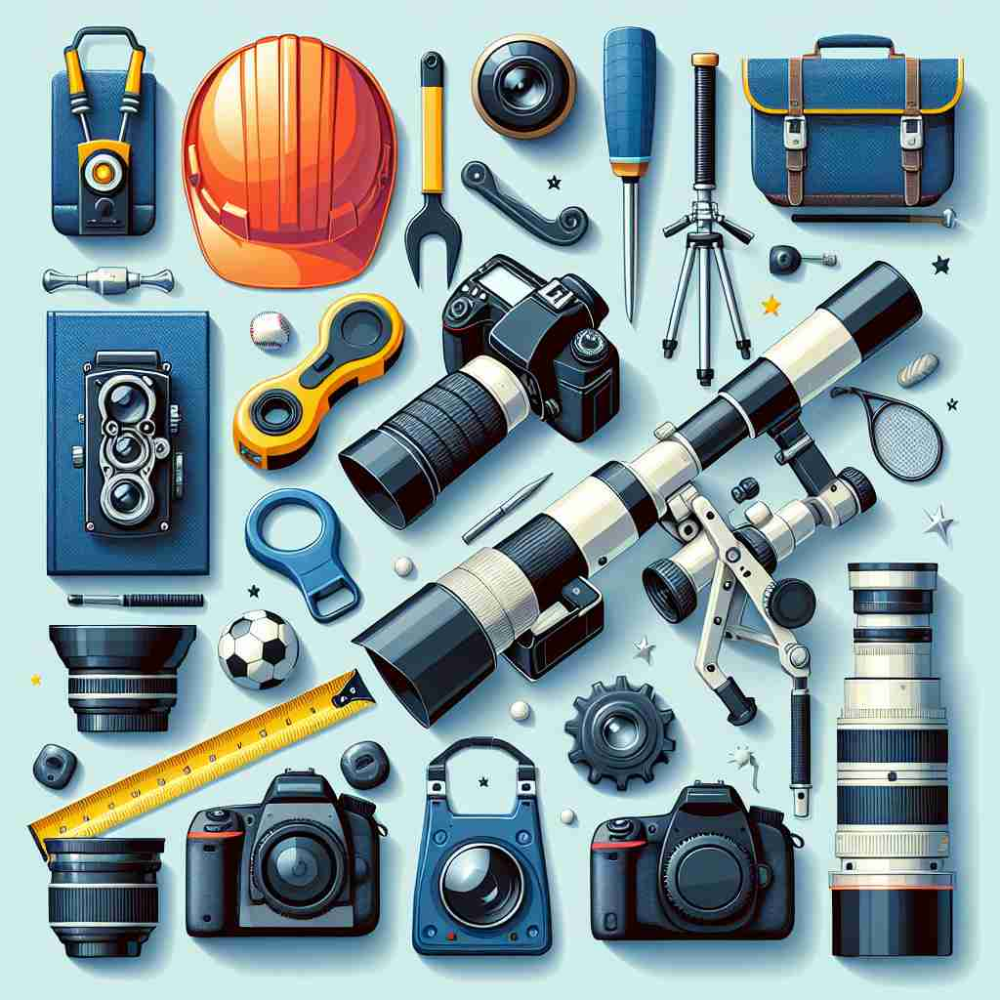

💬 The photographer uses special camera equipment to take clear pictures.

💬 The toolbox has many hand tools and equipment for fixing things.
🔈 [ɪ'kwɪpm(ə)nt]
🗝️ n. the things that are needed for a particular purpose or activity
🖼️ 在一个热闹的摄影工作室，摄影师正在准备拍摄。他检查了相机、镜头、三脚架和灯光布置。这一切都是为了确保每张照片的完美，同时也展示了‘equipment’作为特定活动所需物品的意义。
🔍 想象'equipment'是为特定目的而准备的一套工具或用品。无论是物理的还是抽象的，都是为了"装备"某人或某物以应对特定情况。这个核心概念贯穿了'equipment'的各种用法，帮助你更容易理解和记忆它的多重含义。
💬 The photographer uses special camera equipment to take clear pictures.
💬 The toolbox has many hand tools and equipment for fixing things.
🌳 由词根 "equip"（配备）和后缀 "-ment"（表示行为或结果）组成，因此 "equipment" 表示 "设备、装备"。
💡 记忆 "equipment" 时，可以联想为 "equip"（配备）加上 "-ment"（行为的结果），即 "配备的结果"，容易想到 "设备"。
🗝️ n. the process of equipping or providing with necessary items
🖼️ 在一个出发前的露营地，领队正在分发帐篷、睡袋和炊具给每个队员。他解释着如何使用和保养这些用品，体现了‘equipment’作为配置或提供必要物品的过程。
💬 The equipment of the new laboratory took several weeks.
❓ 从"装备物品"延伸到"装备过程"
🗝️ n. a set of articles or physical resources serving to equip a person or thing
🖼️ 在一个嘈杂的健身房中，会员们利用跑步机、举重设备和瑜伽垫进行锻炼。这里的设施组成了‘equipment’，帮助每个会员实现他们的健身目标。
💬 The soldier's equipment included a rifle, helmet, and backpack.
❓ 强调作为一个整体的装备集合
🗝️ n. the mental or emotional resources of a person
🖼️ 在一场紧张的辩论赛上，参赛者需要动用所有的知识储备和辩论技巧。观众可以感受到她冷静的分析和机智的回应，这些正是‘equipment’作为心理或情感资源的体现。
💬 His emotional equipment was not adequate to deal with the crisis.
❓ 从物理装备引申到心理或情感上的"装备"